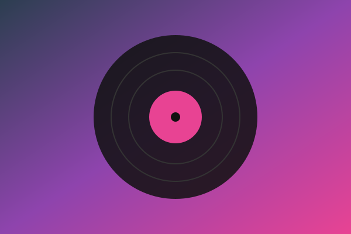

Guia Rápido: Como Montar sua Primeira Playlist
Começar uma playlist exige foco no clima que você quer criar. Para
montar uma seleção sem complicações, siga estes passos:
Escolha o Tema: Defina o clima da playlist, como treinar, estudar ou relaxar. Isso ajuda a decidir
quais músicas entram e quais ficam de fora.
Mistura e Ordem: Combine seus hits favoritos com algumas descobertas novas. Comece com músicas que
chamam atenção e deixe as mais calmas para o final.
Tamanho e Ajustes: Mantenha entre 15 e 25 faixas para não ficar cansativa. Se alguma música
não combinar, remova sem dó e troque por outra.
Com o básico garantido, o caminho fica livre para explorar novos artistas e atualizar a playlist
sempre que quiser.